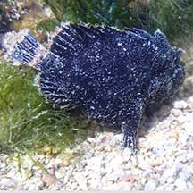

|
|
| fishes text index | photo index |
| Phylum Chordata > Subphylum Vertebrate > fishes > Family Antennariidae |
| Black
frogfish awaiting identification* Family Antennariidae updated Sep 2020 Where seen? This all black and almost velvety frogfish is sometimes seen on our Southern shores. Among coral rubble. There are suggestions that this is a black version of juvenile Spotted-tail frogfishes. Features: Those seen 6-10cm. Body globular, all black, some have sand-coloured markings on the body and edges of the fins and tail. Lacks scales and has a loose prickly skin instead. Lying motionless on the reef flat, it is easily mistaken for a black sponge! Fishing with a lure: Like others in the family, it has a lure at the top of the head to attract prey within striking distance. The lure is pale beige and fluffy. It has bright white markings on the inside of the mouth, perhaps this also lures prey to come closer? Sometimes mistaken for stonefish and scorpionfishes. Here's more on how to tell apart fishes that look like stones. |
 Sisters Island, Aug 07 |
 Lure at the top of the head: pale, fluffy. White markings on the inside of the mouth. |
 Some have sandy-coloured markings. Pulau Semakau, Sep 05 |
*Species are difficult to positively identify without close examination.
On this website, they are grouped by external features for convenience of display.
| Black frogfishes on Singapore shores |
On wildsingapore
flickr
|
| Other sightings on Singapore shores |
 Terumbu Pempang Tengah, May 22 Photo shared by Richard Kuah on facebook. |